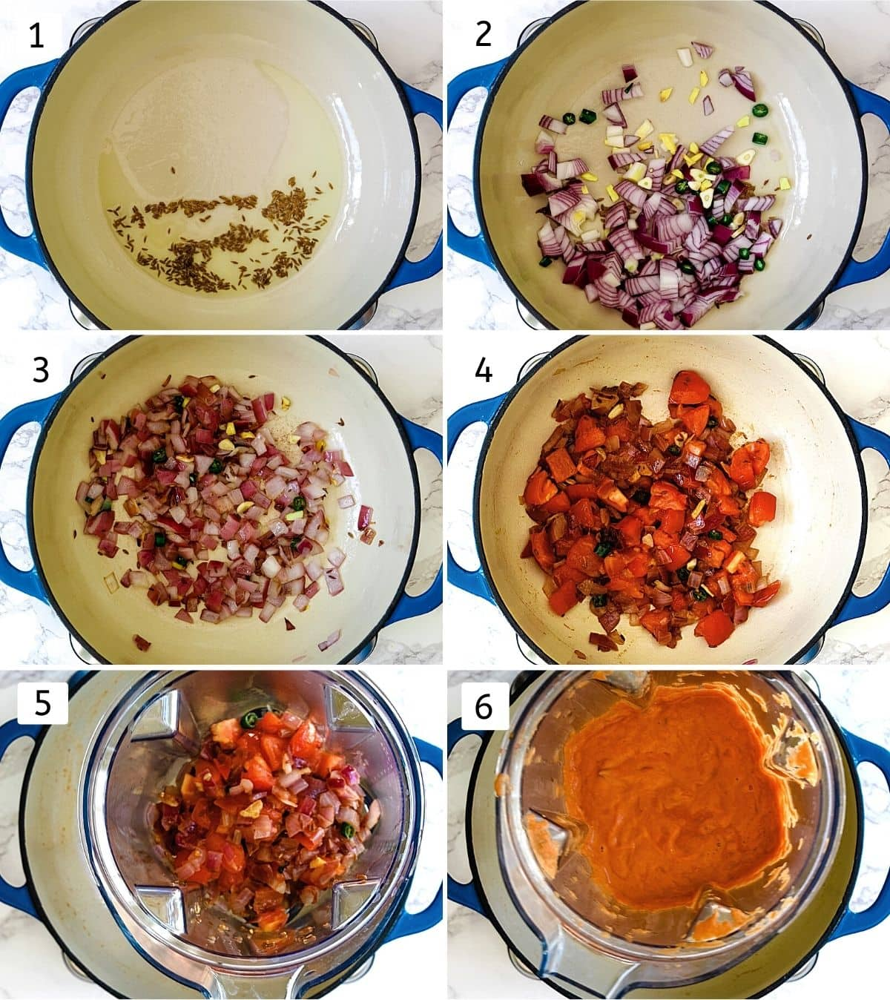

Recipe Details
This matar paneer is home-style paneer gravy. The instruction is included to make it restaurant style.
It’s healthy and less rich compared to most paneer dishes like paneer butter masala, paneer tikka masala, etc.
This is the popular North Indian dish that you’ll surely find in any Indian restaurant menu. Every restaurant/
household has its own version of making it.
Ingredients
Instructions
1) Heat 1 tablespoon of oil in a pan on medium heat. Once hot add cumin seeds and let them sizzle a bit.
2) Add onion, ginger, garlic and green chili. Sprinkle a little salt to speed up the cooking process.
3) Cook until onions become soft and light pink in color.
4) Then add tomatoes and cook until they are softened. Let the mixture cool down slightly.
5, 6) Transfer it to a blender jar and make a smooth puree.

Collage of 6 steps showing cooking onion, tomato, ginger, garlic, chili and ground into paste.
7) Heat the remaining 1 tablespoon of oil in the same pan. Once hot add prepared puree and let it simmer.
If it is spluttering too much then you can partially cover the pan with a lid and continue cooking.
8) Do stir every few minutes to make sure that it is not sticking to the bottom and sides of the pan.
Cook until it becomes thick and most of the water is evaporated.
9) Now add turmeric powder, red chili powder, coriander powder and remaining salt.
10) Mix well and saute for a minute.
Collage of 4 steps showing cooking gravy, adding spices and mixing.
11) Add water and let it simmer for 5 minutes. While the gravy is simmering, take green peas
in a microwave-safe bowl with a couple of tablespoons of water and a sprinkle of salt. Microwave it for about 4 minutes.
12) Now add the paneer and cooked peas. Mix and simmer for 2 minutes.
13) Add garam masala and crushed kasoori methi. Mix well.
14) Add heavy cream and mix. Let it come to a simmer and turn off the stove.
Collage of 4 steps showing simmering gravy, adding peas & paneer, adding garam masala & kasoori methi, adding cream.
üçΩ Serving Ideas
Meal 1: Serve matar paneer with Indian bread (naan, lachha paratha) and Indian onion salad, salted lassi on the side.Meal 2: Serve matar paneer with piping hot steamed instant pot basmati rice or jeera rice. Have some roasted papad
and kachumber salad on the side for some crunch and fresh element.